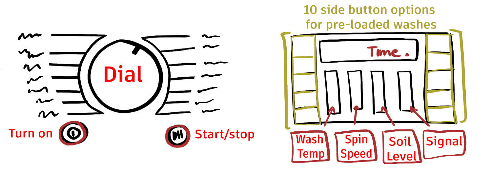
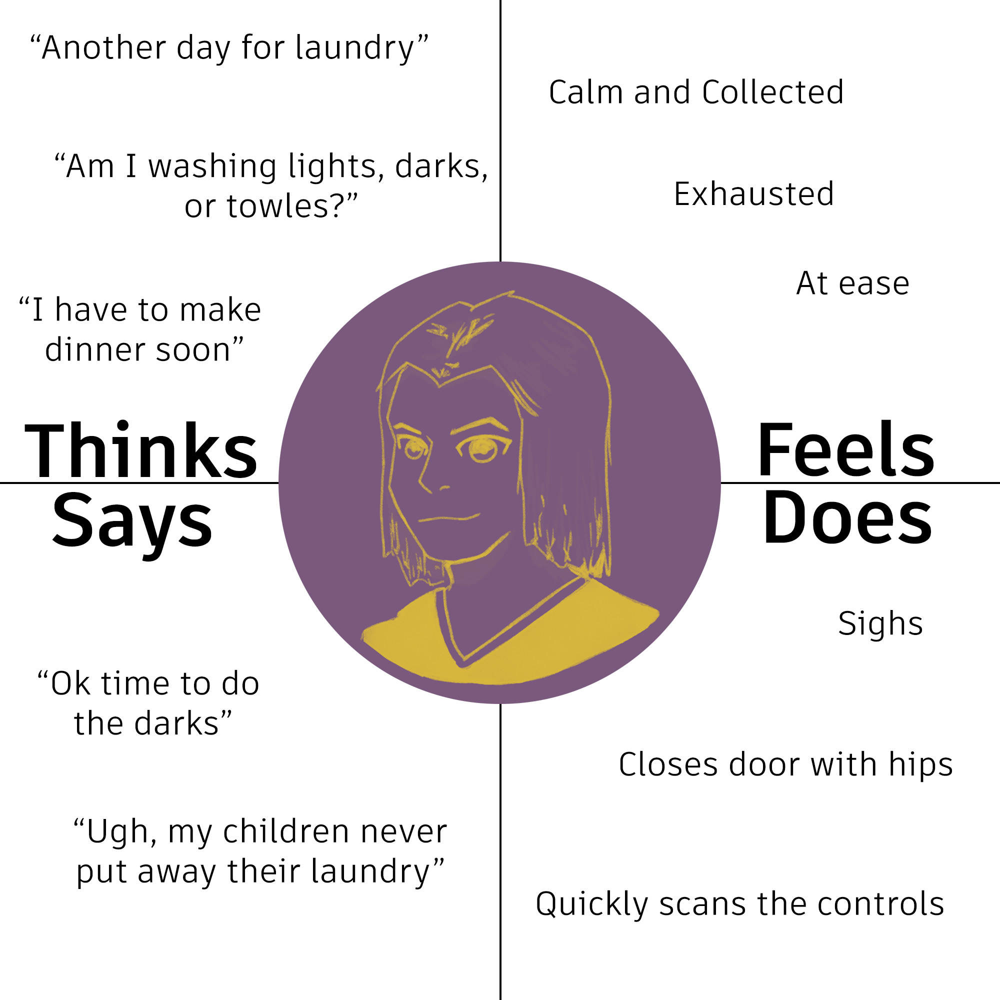
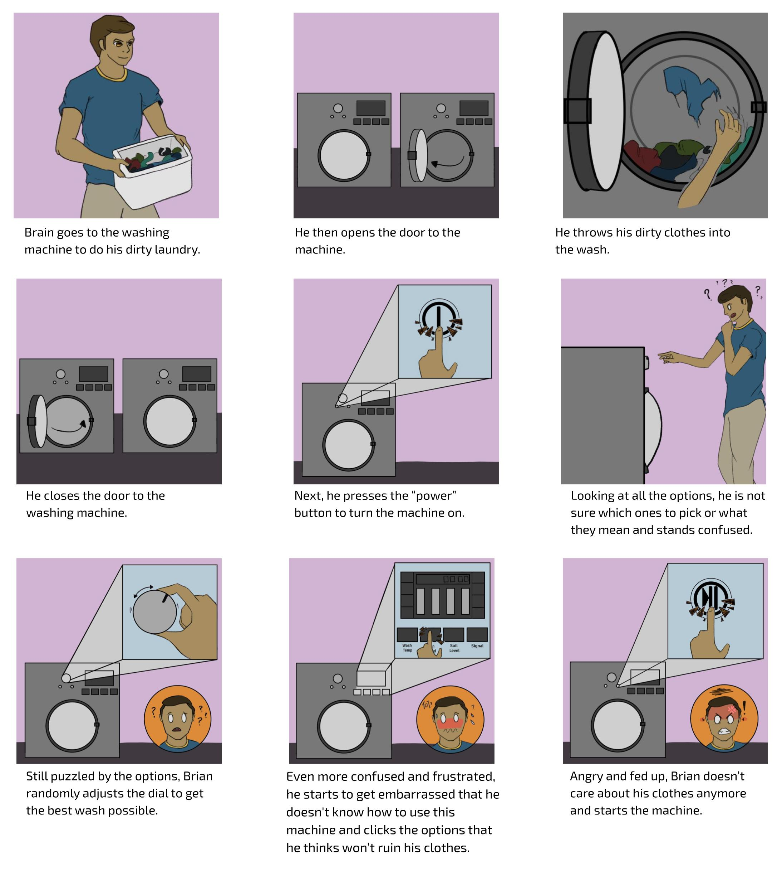

Personas and Storyboards
Overview
During my sophomore fall semester at Brown, my UI/UX class assigned us a project that made us pick
an
interface that was accessible but flawed. Using users feedback, we then had to make personas and
storyboards centered around the users and their experiences. By doing so, it creates a better
understanding of users and their own experiences interacting with interfaces.
Due to COVID, interface selection was limited and therefore users were based on my family members
within
my household. As a result, I chose my family's washing machine.
Today's interface: Washing machine

This interface lets the user choose what type of wash they want their clothes to have. Each wash
cycle can be extremely specific: you can change the spin speed, temperature, or the amount of
water. It then takes the inputs and customizes the wash for your clothes.
Research
Observations
All users took time to read the labels for the dial, although varying from skimming to taking a moment
to
read
all of
them, and all took brief moments to step back to look at the machine as a whole. Furthermore, most users
paused
at the
control panel and hesitated while inputting the setting using the buttons.
First time users became increasingly frustrated as they kept reading the additional options and buttons,
while
users
who have experienced the machine were less affected by the options and skimmed through them quickly.
Some
common
phrases heard from users was: “What does this mean?”, “ummmm”, and “am I doing this right?”.
Interview Questions:
- What buttons do you see?
- Do you know what each option does?
- Explain your process when picking options from the dial and the grid.
- What surprised you, if anything, when picking your type of wash?
- Do the labels help or confuse you when picking washing options?
Most users found that although there were a plethora of tools and buttons available, the main issue with
the
overall interface was how confusing and how little information it provided about the influence each
option
had on the clothes. Furthermore, the differences in options was confusing, especially the control panel;
users didn't know how to control the main 4 buttons and had no/little understanding of the 8 side
options at
all. In fact, even the most advanced user didn't understand all the buttons and options for the dial.
Although some of the labels helped with choosing the type of was for each fabric, there were just too
many
sub-options for each label. The results from the interview questions posted were from 3 main types of
users:
one who uses the machine on a weekly basis, one who is familiar with the machine but barely uses it, and
one
who has seen the machine twice. As a result, I felt as if the answers were fairly balanced; however
there is
bias based on the fact that all users have previously seen the machine before.
Personas
Empathy Map: Working Wendy

The user is a mother of 4 children who uses the washing machine on a regular basis. They are used to
the
options
and therefore rarely get frustrated; they know the exact button to use for each type of clothes and
which to avoid
entirely.
This mother admitted that although she knows which options to choose for certain clothes, there are
just
way too
many and most remain unused. In fact, she states that even she doesn’t know what most of the
functions
do and will
stick to the options that are understood easier.
This mother represents the users that are familiar to the machine and its options yet still confused
about the
excessive options and their functions. However, these users still accept that they will never
understand
and
proceed to do their daily jobs.
Empathy Map: Working Bewildered Brian
This user is a new college grad coming back from school. The user is not new to the washing machine
but is rather unfamiliar with all of its components and the model itself. They are unsure of each
button pressed and the consequences/outcomes of each option.
the user is a fairly new user puzzled by the machine and its options. He is unsure about almost all
his
decisions
and questions if he has inputted the correct options for his wash. In the end, he gets increasingly
frustrated with
his confusion which pushes him to give up.
This user represents the users unfamiliar with the functions of the machine and its choices. As a
result, the users
will typically walk away in frustration or start the machine to end the confusion.
Storyboard
Bewildered Brian

Takeaways
From this project, I have learned that over-complicating interfaces with every option can confuse users
and
distract them from their initial task. Interfaces should be a streamlined design that helps
the
user quickly access information without confusion from a quick scan. Additionally, I have
learned
how to effectively collect data and turn it into useful information about the users and their
interactions
with
interfaces.